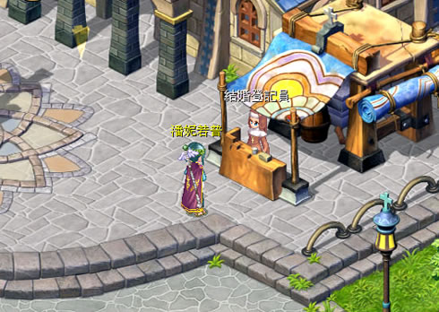
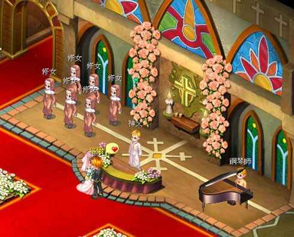
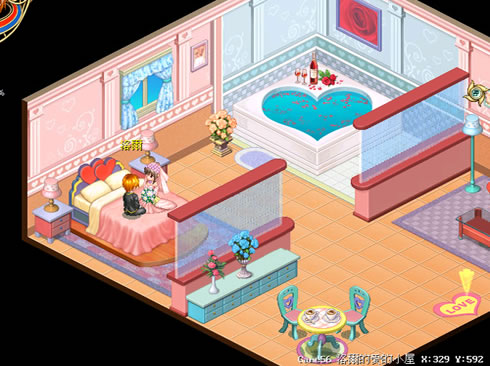

结婚系统
| 活动名称：结婚系统 活动时间：2007年9月29日更新后 活动办法：只要游戏中角色30级以上(含)，就可以男女配对申请结婚��！ 活动内容：游戏中角色只要等级30级以上(含)就可以与想要结婚的对象双双组队，前去”克里斯村”跟”结婚登记员”说话，他就会热心告诉你，结婚时所有的注意事项！  <上图为结婚登记员>  <结婚教堂>  <结婚后爱的小屋> 结婚注意事项： 1. 玩家等级须达30级，才可申请结婚。 2. 申请结婚双方将会各扣除6万元金币。 3. 要申请结婚的两个人必须组队，且队伍中不能有其它队员。 4. 双方必须拥有结婚戒指，才可执行结婚的申请。 5. 完婚的伴侣需与申请结婚的对象相同。 离婚注意事项： 1. 正常状况下申请离婚需要两人同时在在线(不需组队)。 2. 双方同意离婚后，将扣除申请者20万的金币，若金币不足则无法完成离婚。 3. 若伴侣未上线达30天，于申请后将可强制执行离婚。 4. 若伴侣删除角色，则婚约自动解除。 5. 玩家被系统强制离婚，系统将会发信通知，并且不会扣除20万金币。 6. 玩家结婚所启用的物品与功能，将于离婚后全数回收。 7. 离婚后「交友情感」内的「伴侣」选单，将不再显示伴侣数据。 |